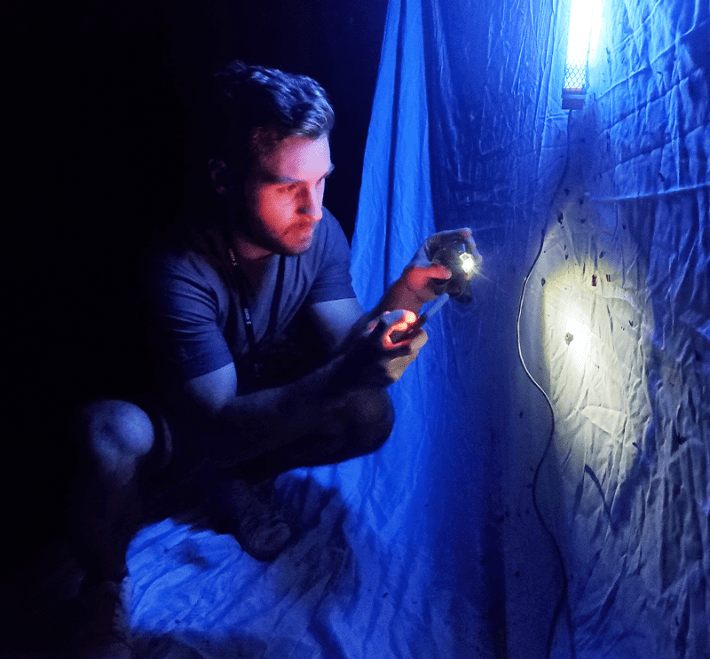
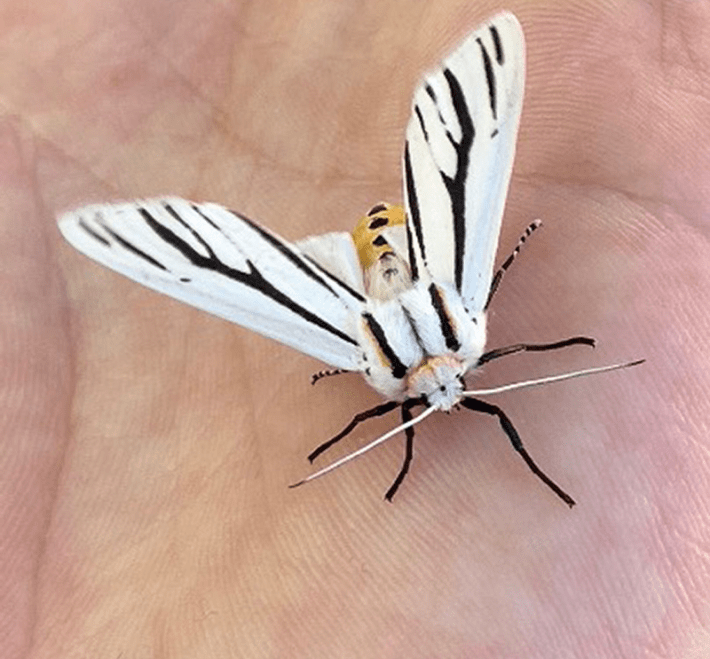
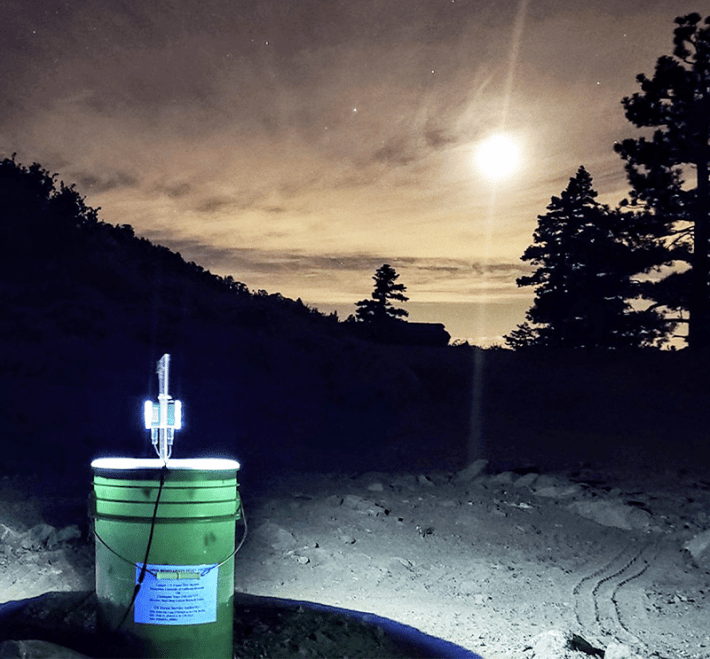

It’s an hour past sunset, and I’m alone atop a mountain in Southern California, surrounded by darkness. I’m fixated on a 5-gallon bucket, a halo of eerie blue light emanating from the top. A swarm of moths frantically pursues the light, completely entrancing me. This isn’t some odd form of meditation—I’m an ecologist who studies pollinators. Many of these moths (around 60 percent of them, I will later discover) are carrying tiny pollen grains on their long, straw-like mouthparts. Although moths might not be the first creature most people think of when they hear the word “pollinators,” they may be some of the most important on Earth, according to recent research. Globally, moths may even rank with the planet’s most famous pollinators—bees.
Pollinators enhance reproduction in 90 percent of the planet’s flowering plant species, including 75 percent of our major food crops. The many different organisms that serve as pollinators—including insects, birds, even sometimes wolves and frogs—help sustain ecosystems and have a hand in producing a third of humans’ food supply. Researchers long assumed that daytime or “diurnal” pollinators—butterflies, flies, hummingbirds, and especially bees—provide most of these essential ecological services. But recent research has steadily shifted that view. This includes a recent global meta-analysis which found that nocturnal pollinators—primarily moths, and to a lesser extent other night-loving insects and bats—contribute as much or even more to reproduction in many plant species, including several food crops.
Nautilus premium members can listen to this story, ad-free.
Nautilus members can listen to this story.

COME TO THE LIGHT: Author Chris Cosma checks a “sheet trap” for moths at an outreach event in Spokane, Washington, he helped organize for National Moth Week. Courtesy of Chris Cosma.
For example, the authors of that analysis found no significant difference in pollination success between day and night for 90 percent of the 139 plant species they analyzed. In fact, nocturnal pollinators actually led to a significantly greater seed set, the proportion of plant ovules that become seeds, which is one metric of plant reproductive success. What’s more, several studies included in the meta-analysis found no difference between day and night pollination for crop species that researchers had assumed to be primarily pollinated by bees during the day.
With my headlamp illuminating a narrow dirt path through the pines of the Santa Rosa Mountains, I find a good spot to set down the bucket of UV light, my homemade moth light-trap: It consists of a plastic funnel affixed to the top of a bucket. Above the funnel is a clear acrylic “vane,” on which a UV LED light is attached. Drawn toward the glow, the moths hit the clear vane, dropping into the funnel, which directs them into the bucket. Once inside, the moths sort themselves by size with a series of stacked metal filters with perforations of different diameters.
In this area, my bucket traps can collect dozens of species each night. They come in a dazzling array of shapes, sizes, and colors, and some would even rival butterflies, moths' dayflying, evolutionary cousins. The aptly-named Mexican tiger moth (Apantesis proxima), for instance, with its stunning orange-and-black stripes; or the enormous rustic sphinx (Manduca rustica), larger than my palm with a salt-and-pepper cloak. On this particular night, I’m out here to find out what they’re pollinating.
Moth pollination notably captured the scientific curiosity of one Charles Darwin. After a friend sent him a sample of a flower from Madagascar,* he hypothesized the existence of a mystery moth with a 12-inch-long proboscis that would have co-evolved to pollinate an orchid (Angraecum sesquipedale, now known as Darwin’s orchid). Its nectar lies hidden at the bottom of a nectar spur of the same length. In a now-famous validation of evolutionary theory, this long-tongued marvel—Morgan’s sphinx moth (Xanthopan morganii)—was discovered in 1903, proving Darwin right 21 years after his death.
But like the nighttime visitor to Darwin’s orchid, moths were largely thought to be minor pollinators, relevant only in specialized cases involving very specific types of flowers. Pollination research overwhelmingly focused instead on diurnal pollinators, leaving a significant diversity of potential pollinators underexplored. Indeed, in terms of species, moths are about eight times more diverse than bees, and 10 times more diverse than butterflies, which actually evolved from moth ancestors. In fact, we now know that moths are the single most diverse group of pollinators on Earth, with more than 123,000 species visiting flowers around the world.
Moths are more efficient than bees at pollinating some plants.
It’s time to embrace moths as important pollinators. Our appreciation for them has perhaps been delayed by the handful of moth species that eat our clothes, invade our pantries, and destroy our crops. These troublemakers have given moths a bad rap, even though most species are not pests.
But there’s a simpler reason that moths have gone for so long with little credit for the ecosystem services they provide—one that exposes a fundamental bias in our understanding of nature as a whole: As daytime creatures, humans have focused more on the species that share our waking hours, such as bees and butterflies. Those charismatic denizens of the daylight have become the poster insects of pollination, the celebrated daytime heroes, while moths have remained obscured in the shadows, ignored, or even vilified.

A MOTH IN THE HAND: Cosma holds a Clio tiger moth (Ectypia clio) that he captured during fieldwork in 2022. Photo by Chris Cosma.
This isn’t just an academic issue. For instance, while it is often recommended to spray agricultural pesticides at night to protect honeybees and other diurnal pollinators, this practice may be harming an even greater number of beneficial nocturnal insect species, whose ecological roles have been largely overlooked.
With one trap set, I weave between towering pines to place another. I’ll place three traps on this part of the mountain, each separated by at least 300 feet. Along the path, I pause to discretely observe a wild currant bush with a red-light flashlight. Caught in the soft glow—invisible to them—dozens of moths flutter among the miniature, trumpet-shaped flowers. If I could illuminate the entire understory, I’d see it teeming with moths, flitting between many of the same blooms as those visited by diurnal pollinators.
Leaning closer, I watch a drab gray moth, likely in the genus Digrammia, bury its head into a pale pink currant flower to sip nectar with its long proboscis. As it feeds, an electrostatic charge that the moth generates in flight—which is thought to occur due to friction between the air and their fluttering wings—causes its proboscis to pick up tiny pollen grains. Then, if fate allows, the moth will transfer some of this pollen to the next flower, fertilizing a future seedling. My light traps will intercept moths as they forage on unknown numbers of plants in this way, their activities otherwise hidden under the cover of darkness. However, like cookie crumbs on a child’s mouth, the pollen on their proboscides will betray them. Later, in our lab my collaborators and I will identify the plants they visited from the pollen grains’ DNA, unraveling their web of surreptitious interactions.
The fates of moths and humans are closely intertwined.
Over the past decade, this genetic technique has helped overcome the logistical challenges of studying moth pollination—from the United Kingdom countryside to the islands of China’s Bohai Strait—illuminating its global importance. Experimental studies have complemented this work, revealing that moths are more efficient than bees at pollinating some plants and that the insects meaningfully contribute to reproduction in food crops, including apples, avocadoes, berries, and gourds.
With my traps secured, I stand nearby to observe the first catches of the night. Dozens of moths filter in from the darkness around me, illuminated as they enter the blue light. Some, such as the Jalisco Petrophila (Petrophila jaliscalis), are smaller than my pinky nail.

BUCKET SCIENCE: One of the bucket traps that Cosma uses to capture moths, which he and his team then analyze to discover which plants they’ve been pollinating. Photo by Chris Cosma.
The traps will collect moths throughout the night as I sleep nearby in my tent. In the morning, with dawn breaking on the horizon, I’ll sort the catches for future analysis in the lab. Our study unfortunately requires euthanizing the moths. Ironically, it is sometimes necessary to kill insects at the small scale of a scientific study in order to better understand the dangers they face in their ecosystems.
Those threats—including habitat loss, pesticides, invasive species, and climate change—are together driving a 1 to 2 percent decline in global insect abundance per year and putting hundreds of thousands of species at risk of extinction. This anthropogenic onslaught has been termed “death by a thousand cuts.” As my traps also show, moths are further threatened by their often fatal attraction to artificial outdoor lights, which disrupts their feeding and mating and increases their risk of getting eaten by bats, spiders, and other predators.
Back in the lab, my collaborators and I discover that the moths I collected were transporting pollen not only from currant bushes, but from more than 100 other plant species. Among them are 18 crop plants, everything from soybeans to oranges—evidence that the fates of moths and humans are closely intertwined. In this study, part of my doctoral research at the University of California, Riverside, we also find that moths will likely become smaller, less diverse, and more sensitive to the loss of the plants that they rely on for nectar as climate change intensifies, jeopardizing their pollination services. This highlights the urgency with which we need to overcome our biases and include moths in conservation efforts, where they have long been neglected.
Fortunately, new technologies are making this easier. Along with better genetic sequencing techniques, automated monitoring approaches—such as camera traps coupled with computer vision—now allow the study of pollinators without the need to capture and euthanize them.
Together, these advances are generating critical data to guide conservation efforts, including ways individuals can support moths and other pollinators. For example, planting key native plants—even at the scale of backyard gardens or potted outdoor plants—supplies pollinators with resources they need to thrive. Native plants also support beneficial insects that prey on pests, in turn reducing the need for harmful pesticides that kill both pests and pollinators. Since many moths overwinter in leaf litter, it also helps to “leave the leaves,” even just in small patches. What’s more, using timers or motion sensors to keep outdoor lights off when not needed helps reduce the burden of light pollution.
By darkening our environments more, we may continue to help moths emerge from the shadows of pollination obscurity to challenge bees for the limelight.
So are moths more important than bees? A natural question to ask—but, I think, the wrong one. To understand why, consider biologist Paul Ehrlich’s rivet-popper hypothesis: If enough rivets were removed one by one from an airplane, it may eventually fall apart mid-flight. Likewise, as more species disappear, the risk of sudden ecosystem collapse increases. A resilient future—where ecosystems continue to provide food for humans and other animals—depends on a diversity of species, each playing a vital and complementary role.
If we are to reach that future, we must value and protect all pollinators—whether we are awake to see them or not. 
Lead image: B. Illustations / Shutterstock
*As originally published, this piece erroneously stated Darwin had visited Madagascar. It's been corrected in the story above.